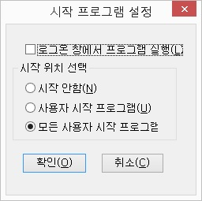
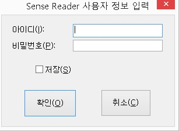
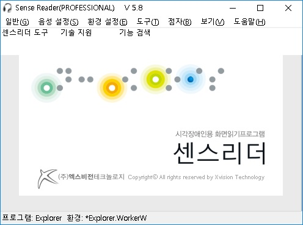
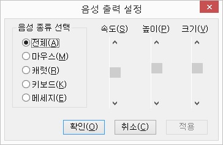
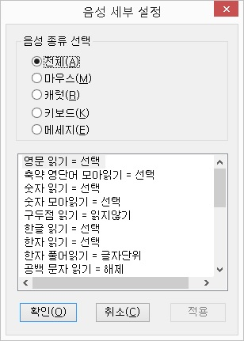

Ⅳ-1. 실행하기
센스리더를 실행하려면, '시작 프로그램'에 등록하여 컴퓨터 부팅시 자동으로 실행되게 하거나 부팅 이후 기능키나 바탕화면의 프로그램 아이콘을 통하여 실행하는 방법 등을 사용할 수 있습니다.
1. 시작 프로그램 등록에 의한 실행
센스리더를 설치할 때, 초기 설치화면에서 '자동 설치'를 선택했다면 센스리더는 '시작 프로그램'에 자동으로 등록됩니다.
'사용자정의 설치'를 선택한 경우에는 설정화면에서 사용자의 필요에 따라 '시작 프로그램'에 등록 여부를 선택할 수 있습니다.
설치 이후 '시작 프로그램 등록' 설정은 <Ctrl-\(백슬래시)> 센스리더 윈도우를 열고 [일반] -> [시작프로그램 등록] 메뉴를 사용해 변경할 수 있습니다.
센스리더를 '시작 프로그램'에 등록하여 사용하면 윈도우즈 시작시에 나타나는 네트워크 접속이나 새 하드웨어 추가 등의 메세지를 확인하여 필요한 작업을 진행할 수 있습니다.

2. 사용자의 직접 실행
센스리더 설치시 '시작 프로그램'에 등록을 하지 않았다면 다음의 방법을 사용하여 센스리더를 직접 실행합니다.
1) 바탕화면에서 'Sense Reader' 아이콘( )을 찾아 <Enter>키를 누르거나, 실행 단축키인 <Ctrl-Alt-S> 키를 눌러 센스리더를 실행합니다.
)을 찾아 <Enter>키를 누르거나, 실행 단축키인 <Ctrl-Alt-S> 키를 눌러 센스리더를 실행합니다.
2) 시작 버튼을 눌러 시작 메뉴를 열고, '프로그램 -> Sense Reader -> Sense Reader' 항목을 찾아 실행합니다.
인터넷이 연결된 상태라면 처음 센스리더가 실행될 때, '사용자 정보 입력' 대화상자가 나타나 사용자 정보를 입력받습니다.
이곳에 자신에게 발급된 아이디와 비밀번호를 입력합니다. 이 대화상자는 센스리더가 실행될 때마다 나타나게 되는데 이를 원치 않을 경우 '저장' 체크박스를 선택해 주면 됩니다.

만일, 등록된 아이디가 없다면 회사로 연락하여 본인 확인을 거친 후 새로운 사용자 아이디를 부여받습니다.
* 일반적으로는 화면읽기프로그램이 윈도우즈 시작시에 자동으로 실행되도록 설정하는 것이 바람직합니다. 하지만, 컴퓨터에 다른 화면읽기프로그램이 이미 설치되어 있고, 그 프로그램이 '시작 프로그램'에 등록되어 있다면, 해당 프로그램을 '시작 프로그램'에서 제거하기 전까지 센스리더는 그 프로그램을 종료한 후에 수동으로 실행시켜주는 것이 좋습니다.
3. 센스리더 프로그램 창 활성
센스리더는 화면에 출력되는 텍스트나 그래픽 정보를 시각장애인이 이해할 수 있도록 음성출력해 주는 프로그램이기 때문에 일반적인 프로그램들처럼 실행시 프로그램 창을 화면에 표시하지 않습니다.
만약, 센스리더의 환경 설정을 변경하거나 툴바 도구 및 메뉴 기능을 실행하기 위해서는 프로그램 창을 활성화해야 됩니다.
센스리더가 실행 중인 상태에서 <Ctrl-\(백슬래시)> 키를 누르거나 트레이 영역의 센스리더 아이콘을 클릭하면 센스리더 프로그램 창이 활성화됩니다.
센스리더 프로그램 창은 <Esc> 키를 누르면 닫힙니다.
Ⅳ-2. 종료하기
다음의 방법을 사용하여 센스리더를 종료할 수 있습니다.
① <Ctrl-\(백슬레시)>키를 눌러 센스리더 윈도우를 엽니다.
② <Alt-F4>키를 누르거나, [일반] -> [종료] 메뉴를 선택하면 '종료 확인' 대화상자가 출력됩니다.
종료 단축키인 <Insert-F4>도 사용이 가능합니다.

③ '종료 확인' 대화상자에서 '종료' 버튼을 누르면 프로그램이 종료되며, '다시 실행' 버튼을 누르면 센스리더가 종료 되었다가 다시 실행 됩니다.
프로그램을 종료하지 않으려면, '취소' 버튼을 선택하거나 <Esc>키를 누릅니다.
참고사항: 프로그램 종료시 한 번 더 확인 과정을 거치는 이유는, 실수로 종료를 선택한 경우에 갑자기 음성출력이 중단되어 사용자가 당황하는 경우를 예방하기 위해서입니다.
Ⅳ-3. 화면 구성

센스리더는 시각장애인용 화면읽기프로그램이기 때문에 일반적인 응용 프로그램과 달리 실행시 프로그램 창을 별도로 출력하지는 않습니다.
프로그램 정보 확인이나 설정 변경을 위해서는 <Ctrl-\(백슬래시)> 키를 눌러 센스리더 윈도우를 활성화 해 주어야 합니다.
센스리더 프로그램 창의 구성은 다음과 같습니다.
1. 제목줄
프로그램명과 버전이 함께 표시됩니다. 만일, 정품 인증에 실패한 경우 "센스 리더 - 데모"로 표시됩니다.2. 메뉴줄
센스리더의 주메뉴가 표시됩니다. 메뉴는 일반, 음성설정, 환경설정, 도구, 점자, 보기, 도움말 등으로 구성됩니다.3. 센스리더 툴바
방향키 및 엔터 키로 손쉽게 접근할 수 있는 센스리더의 도구 기능들이 표시되며, 기능검색, 센스리더 도구, 일정 관리 등 센스리더 에디션 및 동작 상태에 따라 다양한 형태로 구성이 됩니다.4. 정보창
정보창에는 메모리, 하드디스크의 크기, 디스플레이의 색상 및 해상도가 표시됩니다. 정보창은 [보기] 메뉴의 [정보창] 메뉴가 선택되어 있는 경우에 정보를 표시합니다.5. 상태 표시줄
상태 표시줄에는 실행중인 응용 프로그램과 현재의 환경 그리고 환경 수정 상태 등의 정보가 표시됩니다. 환경 이름 앞에 '*' 기호가 붙은 경우 환경이 변경되었음을 의미합니다.Ⅳ-4. 사용자에 맞는 기본 환경설정
센스리더는 일반적으로 많이 사용되는 프로그램들에 대해 최적의 환경을 미리 구성했기 때문에 설치와 동시에 그대로 사용해도 무방합니다.
단, 기본적으로 설정된 음성의 속도 및 크기, 구두점 읽기 방법, 대화상자 자동읽기 등의 설정값이 사용자 취향에 맞지 않는다면 센스리더 설치 이후 사용자에 알맞게 설정을 변경하면 됩니다.
환경설정은 크게 기본환경설정과 일반환경설정으로 나뉩니다.
1. 기본환경과 일반환경의 차이
기본환경은 윈도우즈의 모든 프로그램에 적용되는 센스리더 환경을 의미하며, 사용자가 수동으로 환경을 열어 주어야 합니다.
기본환경을 열고 음성속도를 초기값에서 8로 변경했다면 탐색기나 메모장, 익스플로러 등 모든 프로그램의 음성속도가 8로 변경됩니다.
일반환경은 해당 응용프로그램을 실행하면서 센스리더가 자동으로 환경을 열어주기 때문에 사용자가 별도로 환경을 열 필요는 없습니다.
예를 들어, 다른 윈도우즈 프로그램들은 음성속도를 초기값으로 그대로 놔두고 메모장에서만 음성속도를 7로 변경하고자 한다면 메모장을 실행한 상태에서 음성속도를 변경하고 환경을 저장해 주면 됩니다.
초보사용자라면 환경의 일관성을 위해 기본환경을 열고 사용자에 알맞게 환경을 설정하는 것을 권장합니다.
2. 음성 속도, 높이, 크기 설정하기
아래 방법을 따라 기본환경의 음성속도와 구두점 설정을 변경합니다.
① <Ctrl-\(백슬래시)> 키를 눌러 센스리더 윈도우를 엽니다.
② <Alt>키를 눌러 [일반] 메뉴를 열고, 방향키를 아래로 눌러 [기본환경 열기] 메뉴를 실행합니다.
* 위의 ②번과 과정은 <Ctrl-Alt-Shift-B> 단축키를 이용해서 한 번에 기본환경을 열 수도 있습니다.
④ <Alt>키를 눌러 다시 메뉴를 연 다음, 오른쪽 방향키를 한 번 눌러 [음성설정] 메뉴까지 이동하고, 아래 방향키를 한 번 더 눌러 [음성출력] 메뉴를 찾아 실행합니다.
⑤ '음성설정' 대화상자가 나타나면 방향키를 이용하여 '전체' 항목에 맞춥니다.
⑥ <Tab> 키를 한 번 눌러 속도 스크롤바로 이동합니다. 여기서 좌, 우 방향키를 이용해 자신에게 알맞는 음성속도를 선택합니다.
⑦ 음성속도와 마찬가지로 <Tab> 키를 눌러 높이와 크기 스크롤바로 이동하고 좌, 우 방향키를 이용해 자신에게 알맞는 설정을 합니다.

⑧ 모든 설정이 끝났다면 <Tab> 키를 눌러 '확인' 버튼을 찾아 누릅니다.
⑨ <Alt> 키를 눌러 [일반] 메뉴를 열고, 방향키를 아래로 내려 [환경 저장] 메뉴를 찾아 실행합니다.
⑩ 기본환경의 저장 여부를 묻는 대화상자가 나타나면 '예' 버튼에서 <Enter>키를 눌러 기본환경을 저장합니다.
⑪ <Esc>키를 눌러 센스리더의 메인윈도우를 닫습니다.
3. 음성 세부 설정
① <Ctrl-\(백슬래시)> 키를 눌러 센스리더 윈도우를 엽니다.
② <Ctrl-Alt-Shift-B> 키를 눌러서 기본환경을 불러옵니다.
③ <Alt>키를 눌러 [일반] 메뉴를 열고, [음성설정] 메뉴까지 이동한 뒤, 아래 방향키를 눌러 [세부설정] 메뉴를 실행합니다.
④ '세부설정' 대화상자가 나타나면 방향키를 이용하여 '전체' 항목에 맞추고 <Tab>키를 눌러 목록상자까지 이동합니다.
⑤ 목록상자에서는 위, 아래 방향키로 이동하면서 원하는 항목을 찾고 <Space>키를 눌러 항목의 값을 변경합니다.
예를 들어, 모든 구두점을 읽고 싶다면 방향키를 이용해 구두점 읽기 항목을 찾고 <Space> 키를 눌러 '모두 읽기'로 값을 설정하면 됩니다.

⑥ <Tab>키를 눌러 '확인' 버튼을 찾아 <Enter>키로 버튼을 누릅니다.
⑦ <Alt> 키를 눌러 [일반] 메뉴를 열고, 방향키를 아래로 내려 [환경 저장] 메뉴를 실행합니다.
⑧ 기본환경의 저장 여부를 묻는 대화상자가 나타나면 '예' 버튼에서 <Enter>키를 눌러 기본환경을 저장합니다.
⑨ <Esc>키를 눌러 센스리더의 메인윈도우를 닫습니다.
4. 윈도우즈 환경설정
윈도우즈 초기 설치시 설정된 기본 환경은 화면읽기 프로그램을 활용하는데 있어 부적합한 부분이 있습니다.
윈도우즈 설치 이후 시각 효과 설정, 키보드 드라이버 변경, 탐색기 설정 등의 작업을 해 주면 좀 더 정확한 화면 정보를 얻을 수 있어 컴퓨터 활용이 한층 편리해집니다.
이에 관한 사항은 부록2 윈도우즈 설정하기 챕터를 참고하십시요.